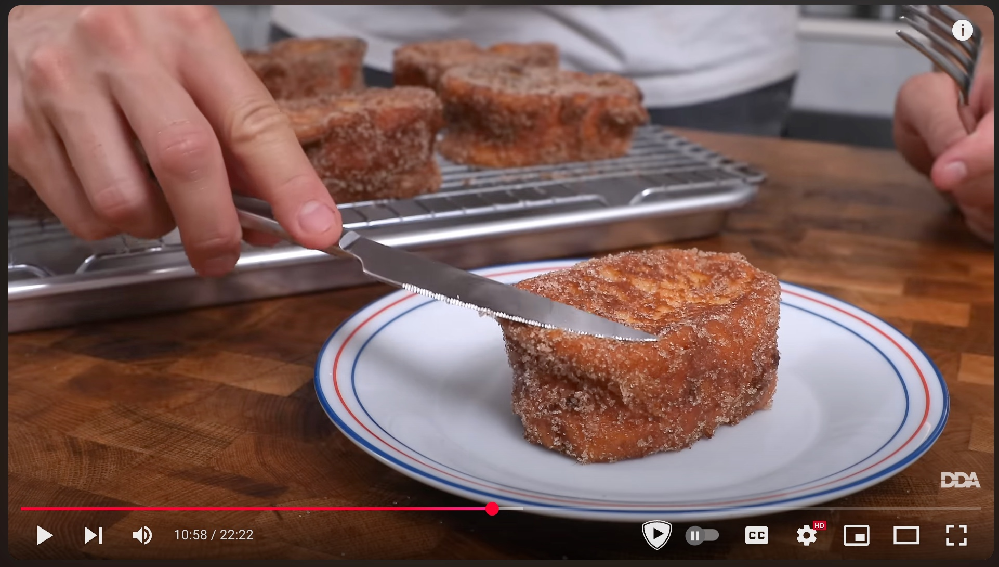

Ingredientes
Instrucciones
- Calienta la leche con la canela y el azúcar hasta que empiece a humear. Deja enfriar.
- Corta el pan en rebanadas de unos 2 cm de grosor.
- Empapa el pan en la leche y deja que absorba bien. Al menos 2 horas dandole la vuelta cada 30
minutos, aunque mejor toda la noche.
- Pasa las rebanadas por huevo batido y fríelas en aceite caliente.
- Escurre sobre papel absorbente o rejilla y espolvorea con azúcar y canela.